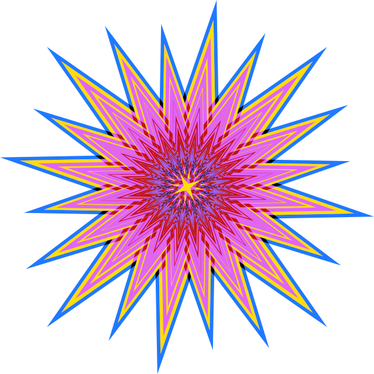

homeIn this lab, I used scale, rotate, translate, and skew to create different hover effects for the four stars. I also combined skew and scale on one star to make the interaction more interesting. Adding transitions made the movements smoother and slower. Absolute positioning helped me arrange the stars in different parts of the night sky. One challenge was adjusting the positions and sizes to create a balanced layout. After experimenting, I changed the placement of the stars and added a glowing hover effect to the moon.